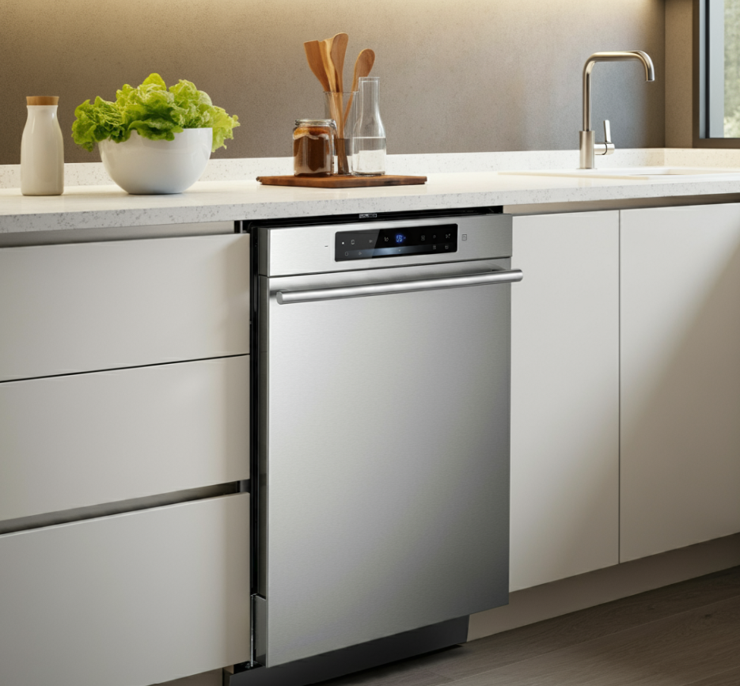
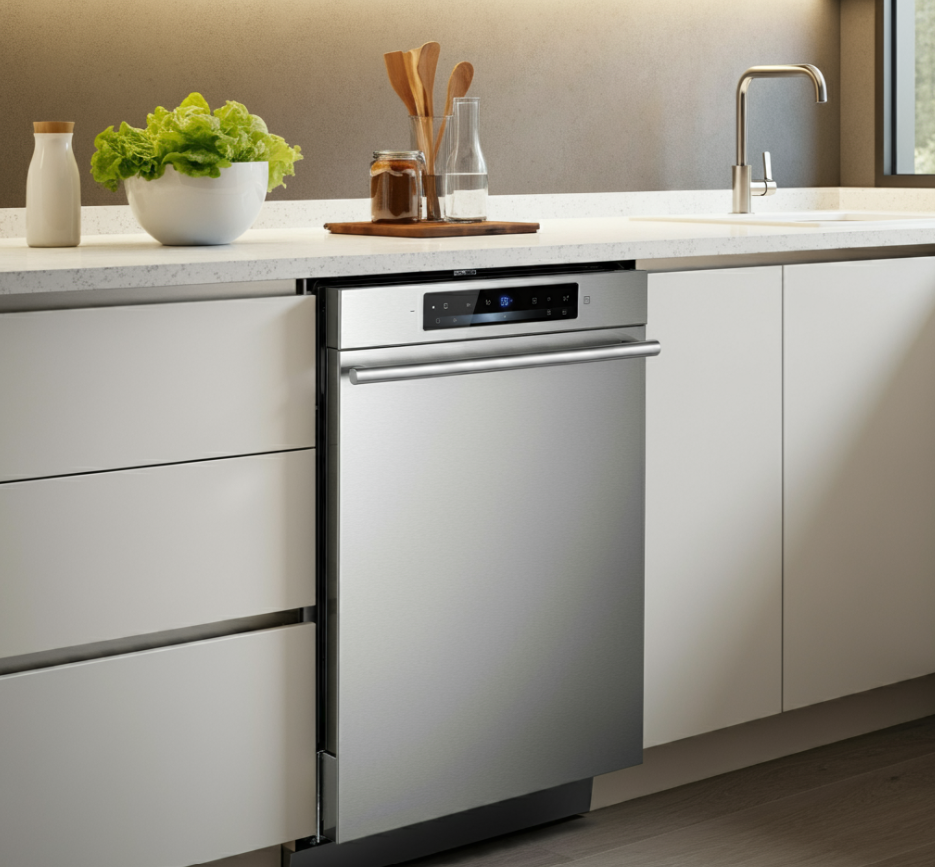

A modern kitchen is a blend of sleek design, high functionality, and cutting-edge technology, characterized by clean lines, minimalist aesthetics, and smart use of space. The overall look is sophisticated yet practical, making the kitchen a central hub of the home. Color Scheme: The color palette typically features neutral tones like whites, grays, and beiges, which create a bright and airy atmosphere. Accents of bold or contrasting colors might appear through elements like backsplashes, appliances, or decorative items, adding visual interest without overwhelming the space. Cabinetry: Modern kitchens often feature streamlined cabinetry with flat-front doors and minimal hardware. Cabinets are frequently made of high-gloss or matte finishes in materials such as wood, laminate, or painted surfaces. The design focuses on maximizing storage and maintaining a sleek appearance. Countertops: Countertops are usually made from durable, high-quality materials like quartz, granite, or marble. They have a smooth, seamless appearance, often with minimal visible seams or joints. The choice of material complements the overall color scheme and enhances the kitchen’s modern look. Backsplashes: Backsplashes in modern kitchens are often simple and elegant, using materials like subway tiles, glass panels, or patterned tiles. They serve both a functional and decorative purpose, adding a touch of style and easy-to-clean surface. Appliances: Modern kitchens feature high-end, integrated appliances that blend seamlessly with the cabinetry. Stainless steel is a common choice for a sleek, contemporary look, but other finishes like black or panel-ready appliances can also be used. Smart appliances with touch controls or advanced features are often incorporated for added convenience. Lighting: Lighting is both functional and decorative, combining natural light with modern fixtures. Recessed lighting, pendant lights, and under-cabinet LED strips are commonly used to provide bright, even illumination. Lighting is strategically placed to highlight key areas such as countertops and workspaces. Layout: The layout of a modern kitchen emphasizes efficiency and openness. It often features an open-plan design that integrates the kitchen with adjacent living or dining areas. Common layouts include the open island configuration, which provides additional counter space and seating, and the galley style, which maximizes efficiency in narrower spaces. Storage: Storage solutions are practical and innovative, including features like pull-out drawers, lazy Susans, and built-in dividers. Cabinets might include hidden compartments or high-tech solutions like motorized shelves for easy access to stored items. Flooring: Flooring materials are chosen for both durability and style, with options like hardwood, large-format tiles, or polished concrete. The flooring complements the overall design while being easy to maintain and clean. Additional Features: Optional features might include a sleek, built-in coffee machine, a wine cooler, or a smart faucet. The integration of technology is common, with options like touchless sinks, voice-controlled lighting, and advanced ventilation systems. In summary, a modern kitchen is a well-designed space that marries aesthetics with practicality, incorporating high-quality materials, advanced technology, and thoughtful design to create a functional and stylish environment.
A modern living room is a sleek, stylish space that combines form and function with an emphasis on simplicity and elegance. The design is characterized by clean lines, a neutral color palette, and an uncluttered layout, creating an open and inviting atmosphere. Color Scheme: The color palette typically features soft, neutral tones such as whites, grays, and beige, which provide a calm and sophisticated backdrop. Accent colors might be introduced through decorative items like throw pillows, rugs, or artwork, adding subtle pops of color and personality. Furniture: The furniture in a modern living room is minimalist yet comfortable. Pieces often have straight lines and geometric shapes. Sofas and armchairs are designed with sleek profiles, using materials like leather, velvet, or high-quality fabric. Coffee tables and side tables are usually crafted from materials like glass, metal, or polished wood, contributing to the room's clean, streamlined look. Layout: The layout emphasizes open space and functionality. Furniture is arranged to facilitate easy movement and conversation, often centered around a coffee table or a media unit. The design avoids overcrowding, focusing instead on creating a spacious and airy environment. Lighting: Lighting is a key element, combining natural light with contemporary fixtures. Large windows or glass doors maximize daylight, while modern light fixtures—such as pendant lights, floor lamps, or recessed lighting—provide layered illumination. The lighting not only enhances the room’s ambiance but also highlights its design features. Decor: Decor is minimal but carefully curated. Art pieces, decorative vases, or sculptures are chosen for their aesthetic appeal and contribute to the room’s overall design without overwhelming it. Textures are introduced through rugs, throw blankets, and cushions, adding warmth and depth to the space. Technology: Modern living rooms often incorporate technology seamlessly. This might include a sleek, wall-mounted flat-screen TV, built-in sound systems, or smart home features, all designed to blend with the room’s decor rather than dominate it. Additional Features: Optional features might include a contemporary fireplace, built-in shelving, or a feature wall with a distinctive material or design element. Greenery or indoor plants can also be added to infuse a touch of nature and freshness into the room. In essence, a modern living room is a thoughtfully designed space that balances aesthetics with practicality, offering a comfortable and sophisticated environment for both relaxation and socializing.

A modern master bedroom is a harmonious blend of sleek design and functional elegance, emphasizing clean lines, uncluttered spaces, and a sense of serenity. The color palette is often neutral—think shades of white, gray, beige, or soft pastels—with occasional pops of bold color or rich textures to add interest. Furniture pieces are typically minimalist and streamlined, with low-profile beds, floating nightstands, and perhaps a chic bench or an accent chair. The bed is often the focal point, adorned with crisp, high-quality linens and an assortment of pillows for a touch of luxury. Lighting is a key feature, combining natural light with stylish fixtures. Large windows or glass doors might open onto a private outdoor space, while modern pendant lights, sconces, or a statement chandelier provide ambient and task lighting. Storage solutions are integrated and discreet, with built-in closets, cabinetry, and perhaps a modern wardrobe system to maintain a clutter-free environment. The room might also include thoughtful details like a cozy reading nook, a plush rug, or artwork that reflects personal style. Overall, the space feels open and airy, with an emphasis on creating a restful retreat that’s both visually appealing and highly functional.

Step into a world of imagination and adventure! This vibrant and cozy room is designed to be a perfect blend of playful fun and restful relaxation. With its cheerful colors, whimsical decorations, and personalized touches, it’s a space where dreams come to life.The room features a the bed, decortaion and with toys, clipborad, etc, encouraging endless hours of imagination and play. Ample storage ensures that everything has its place, keeping the space tidy and organized. Whether it’s for playing, learning, or dreaming, this room is a special place designed with happiness and comfort in mind. Welcome to a space where every day is an adventure!
In the hallway there is an attic door in the ceiling where you would just have to pull the door down by a rope that is hanging from the lever/handle and in the attic you will find the brain of the house that is the brain because that is where mostly everything is stored and it is all the way on top of the house